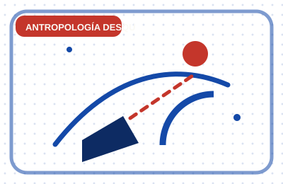

Hay más árboles en la Tierra que estrellas en la Vía Láctea
Tres billones contra unos cien mil millones. Y aun así, la cifra buena de la historia es otra: la que había antes de nosotros.
Hasta 2015 la estimación aceptada era de unos 400.000 millones de árboles en todo el planeta. Un estudio dirigido desde Yale, combinando 429.775 mediciones sobre el terreno con imágenes de satélite, la corrigió a unos 3,04 billones. Es decir, se había subestimado por un factor de casi ocho.
La Vía Láctea contiene entre 100.000 y 400.000 millones de estrellas. Con las cifras en la mano, hay entre siete y treinta árboles por estrella de nuestra galaxia. El dato suele contarse como una nota optimista, y ahí está la trampa.
El mismo trabajo estimó que el número de árboles ha caído en torno a un 46 por ciento desde el inicio de la civilización humana, y que se pierden unos 15.000 millones al año frente a unos 5.000 millones que se plantan o regeneran. La frase completa, la que sirve de verdad en una sobremesa, es que hay más árboles que estrellas en la galaxia y que hace diez mil años había casi el doble.
Fuente: Crowther et al., Mapping tree density at a global scale, Nature (2015).
Volver a la carta